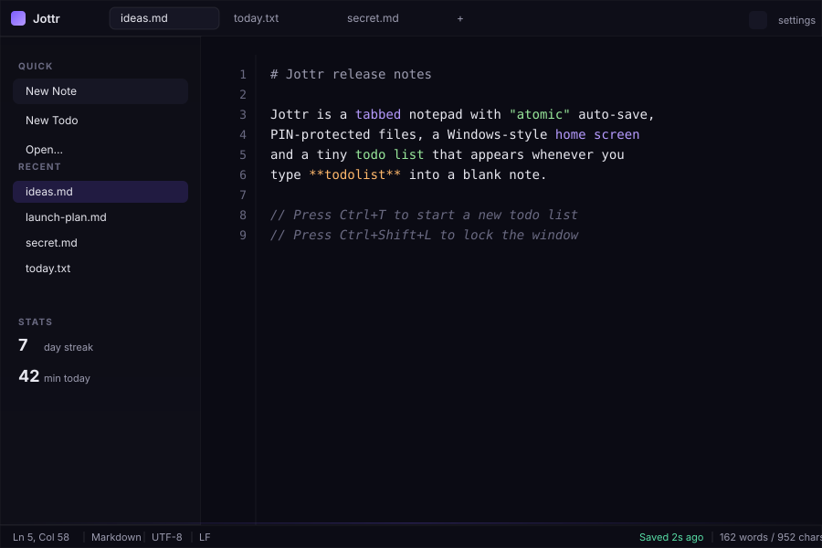
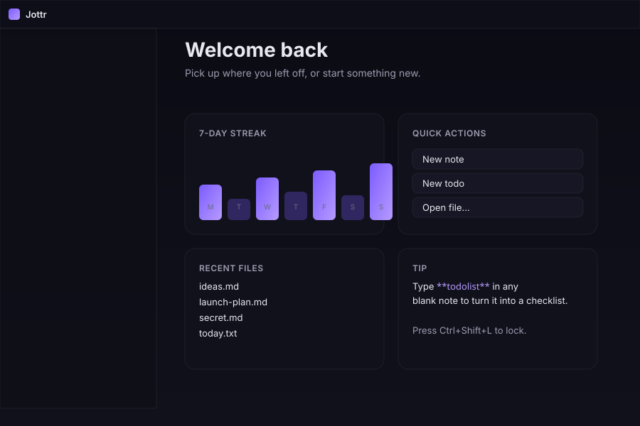
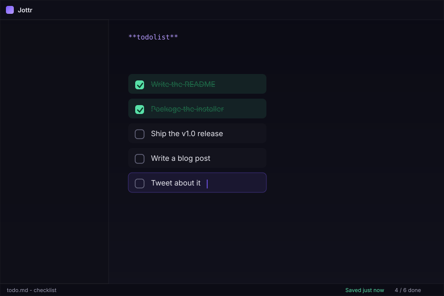

Atomic auto-save
Every save is written to a temp file, fsync'd and renamed. A crash, a power loss, even a yanked USB cable can't lose your text - and the save never resets your caret mid-typing.
Tabs. Atomic auto-save. PIN lock. Tray. Hotkey. A Windows-style home screen with widgets. All in a tiny, hackable Python+webview app.

Every feature is built around one rule: never lose a keystroke, never get in the way.
Every save is written to a temp file, fsync'd and renamed. A crash, a power loss, even a yanked USB cable can't lose your text - and the save never resets your caret mid-typing.
Per-tab dirty indicators, Ctrl+Tab cycling,
close-with-middle-click and a + button to spawn a fresh note.
Set an app-wide PIN or a per-file PIN. Minimize to tray and Jottr re-prompts on next focus. SHA-256 + salt, stored locally.
Hide to the system tray, summon from anywhere with Ctrl+Alt+J (configurable).
Type **todolist** in a blank note and it turns
into a real checklist. Enter adds items, the box
turns them green with strikethrough when done.
A Windows-style home with a 7-day streak bar chart, quick actions, recent files and a rotating tip.
Notes live as .md next to the binary - yours
forever. Sync with Dropbox, git or Syncthing. No proprietary format.
One HTML file, one CSS file, one JS file, two Python files. No build step, no framework, no transpiler.
Mica-style surfaces, a dark-first palette, Material icons - no emoji.


**todolist** in a blank note.
Free, MIT-licensed. Works on Windows, macOS and Linux.
git clone https://github.com/Compromisee/Jottr
cd jottr
pip install pywebview pystray pillow keyboard
python jottr.py